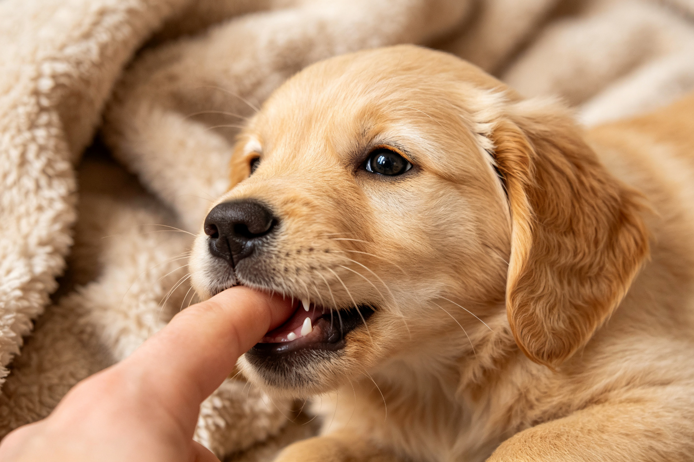
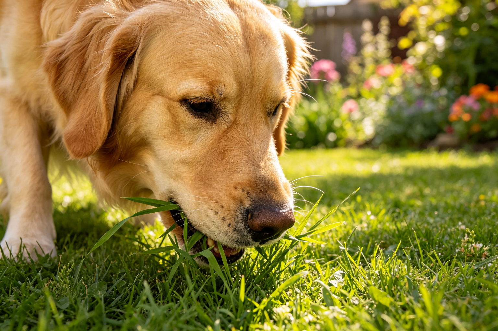
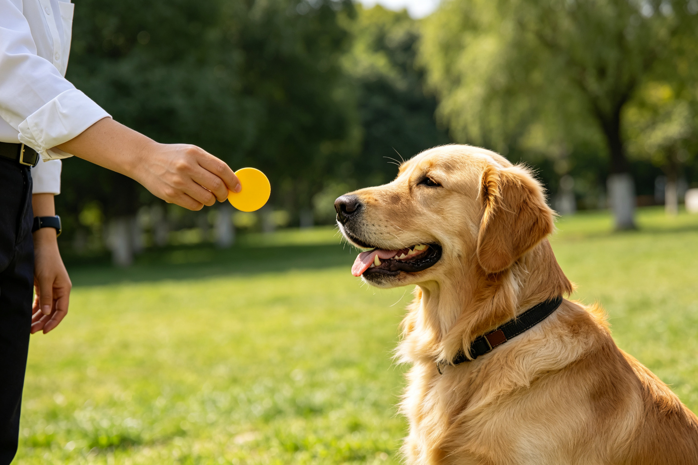

🐕 狗訓練科學
狗狗為什麼會撲人？5步驟修正方法
狗狗撲人不是討厭，而是過度興奮的問候方式。從幼犬時期的社會化、注意力尋求到正向強化的5步驟訓練，行為學家教你終止撲人行為。...
🐕 狗訓練科學
狗狗牽繩拉扯：5步驟鬆繩行走訓練
遛狗被狗拉著跑是多數飼主的日常，但拉扯不是狗的錯——是溝通方式的問題。從狗的探索本能、拉力強化到5步驟鬆繩行走訓練法，從此遛狗不再像拔河。...
🐕 狗訓練科學
狗狗吠叫：6種類型與訓練方法
狗狗吠叫不是噪音，而是語言。警戒吠叫、需求吠叫、焦慮吠叫、無聊吠叫、興奮吠叫、強制性吠叫——6種類型的辨識與各自的訓練策略，用對方法才能有效減少吠叫。...
🐕 狗訓練科學
狗狗為什麼會翻肚子？行為學解析
狗狗翻肚子不代表「臣服」——這個常見誤解可能讓你錯過狗狗的真正意圖。從演化行為學、肢體語言細節到互動脈絡，教你正確解讀狗狗翻肚子的3種含義。...

🐕 狗訓練科學
幼犬咬手咬腳：制止方法與常見錯誤
幼犬愛咬人不是兇狠，而是在學習咬合力控制。用手推開、大聲罵只會強化咬人行為。從社會化窗口、同窩學習理論到正向替代行為訓練，科學終止幼犬咬人。...
🐕 狗訓練科學
狗狗召回訓練：為什麼叫不回來
狗狗放繩就叫不回來是多數飼主的痛點。召回不是靠喊大聲，而是靠建立「回來=好事」的強烈聯結。從常見錯誤、環境干擾管理到10步驟漸進式召回訓練，從此一叫就回。...
🐕 狗訓練科學
狗狗焦慮訓練：去敏感化與反向制約
狗狗怕雷聲、怕陌生人、怕去獸醫——恐懼不是用「勇敢一點」就能解決的。去敏感化、反向制約、Threshold訓練是行為學公認的3大恐懼治療法，完整步驟與常見錯誤一...

🐕 狗訓練科學
狗狗為什麼會吃草？營養與本能解析
狗狗吃草不是因為營養不良——多數情況下是正常的本能行為。從演化遺傳、腸道蠕動刺激到需要就醫的警訊，完整解析狗狗吃草的科學原因與飼主應對方式。...

🐕 狗訓練科學
響片訓練：Shaping方法訓練複雜行為
響片不只能教「坐下」——用Shaping（行為塑造法）可以訓練轉圈、鞠躬、開冰箱等複雜行為。從連續接近法、標記時機到常見卡關解決方案，響片進階訓練完整教學。...